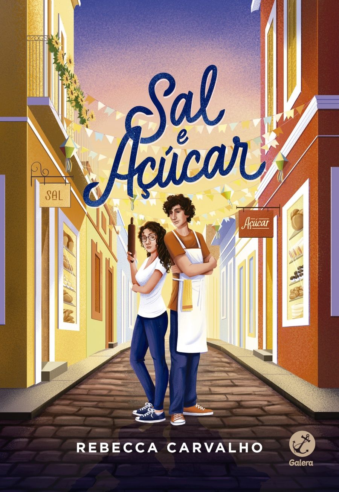

Sal e Açúcar
Receita secreta no livro!
“Uma comédia romântica inesquecível repleta de
representatividade nordestina que promete deixar aquele quentinho no
coração dos leitores.”
Inimigos há gerações, os netos dos donos de duas padarias
concorrentes se apaixonam em Sal e Açúcar, um romance digno de Romeu e Julieta
ambientado nas ladeiras de Olinda.